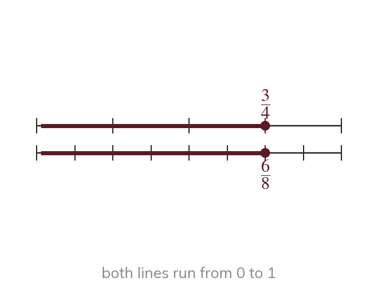
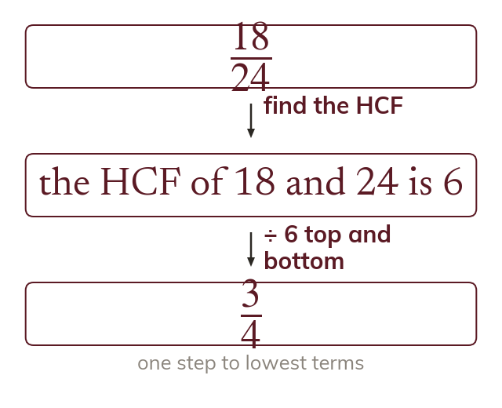
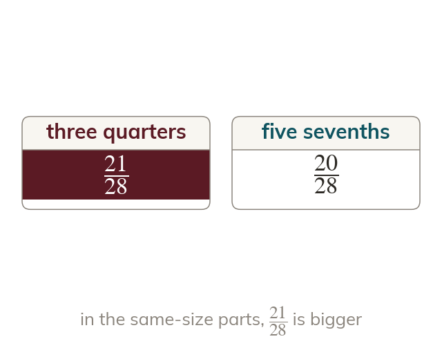
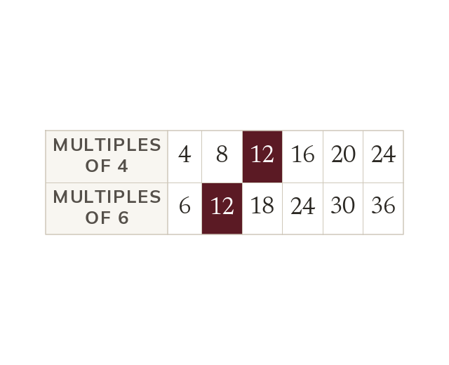

One amount, many names
Equivalent fractions are the same amount cut into different-sized parts. Multiplying or dividing the numerator and the denominator by the same number keeps the value.
A pizza cut into slices with eaten and one cut into with eaten have lost the same amount. Today is about the many names one fraction can have, and choosing the name that makes two fractions easy to compare.
Work down the page at your own pace. Write every answer in your book first, then click to check it.
Read each card, then follow the worked examples one step at a time.

Equivalent fractions are the same amount cut into different-sized parts. Multiplying or dividing the numerator and the denominator by the same number keeps the value.

In lowest terms, the numerator and denominator share no factor except
Dividing both by their HCF gets there in one step.
Pick an answer. If it's wrong, the feedback tells you which mistake it was.
Read each card, then follow the worked examples one step at a time.

Two fractions can be compared directly only when their parts are the same size. Rewritten over a common denominator, the larger numerator is the larger fraction.

Any common multiple of the denominators works as a common denominator. The LCM keeps the numbers smallest.
Pick an answer. If it's wrong, the feedback tells you which mistake it was.
Finished? Next lesson: 7.10.2 Mixed Numbers and Reciprocals.
Log in, then search for a code to practise that skill.
Videos, worksheets and more on each part of this lesson.